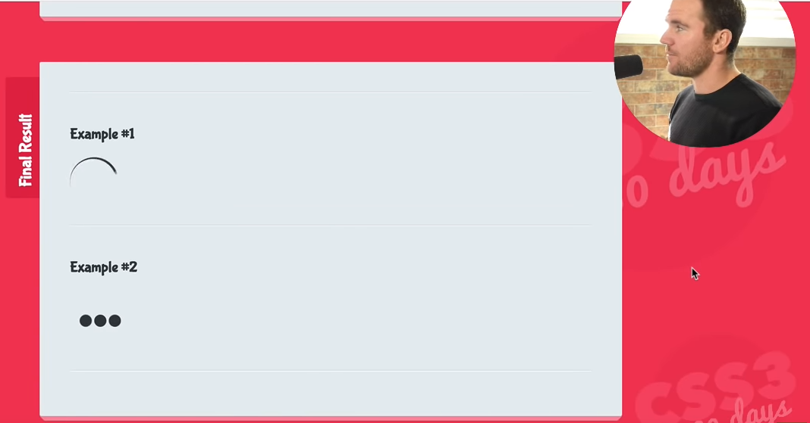

Today I followed day 31 of CSS in 30 Days by Brad Hussey at Code College. We built a fun animated spinner, for loading pages.

I also read the first part of the Chapter 5: Scope Closure of a You Don't Know JS: Scope & Closures at Github.
"Closures are functions that refer to independent (free) variables. In other words, the function defined in the closure 'remembers' the environment in which it was created."
"Whenever you declare a function inside another function, the inside function(s) is/are recreated again each time the outside function is called."
The above definitions I took from a video by the techsith channel at Youtube.
I supplemented it by other video at the same channel, one by Fun Fun Function and other by The Coding Tech channel.
The best explanation I took from Mozilla Web Dev website:
"In some programming languages, the local variables within a function exist only for the duration of that function's execution. Once 'makeFunc()' has finished executing, you might expect that the name variable would no longer be accessible. However, because the code still works as expected, this is obviously not the case in JavaScript."
"The reason is that functions in JavaScript form closures. A closure is the combination of a function and the lexical environment within which that function was declared. This environment consists of any local variables that were in-scope at the time the closure was created. In this case, 'myFunc' is a reference to the instance of the function 'displayName' created when 'makeFunc' is run. The instance of 'displayName' maintains a reference to its lexical environment, within which the variable 'name' exists. For this reason, when 'myFunc' is invoked, the variable 'name' remains available for use and "Mozilla" is passed to 'alert'."
Each of them took a different approach to teach what closures are and I think I will need more time to fully understand it. I'll devote the next days to it again.